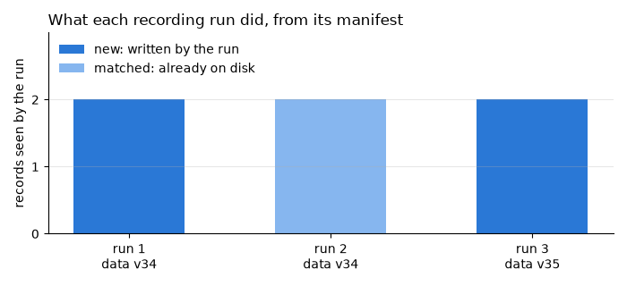

Note
Go to the end to download the full example code.
load_manifest : provenance for each recording session¶
A record says what a call did, but not what it was made with: which commit of the code, which package versions, which version of the input data. And because a record’s id is derived from its behavior, a run that re-records identical behavior writes nothing - the store alone cannot tell you it ever happened.
A session fills that gap. Every record it sees - written by it (new) or already
on disk (matched) - is listed in a manifest, with the environment and whatever
context you pass, written to <store>/_runs/ when the block ends. Records are not
touched, and replay never reads manifests.
Setup: where records go¶
The code under test reads its store from the REGRESSION_RECORDS_STORE environment
variable when it is imported, so the variable is set first
(record_func : recording a first call says why).
import os
import tempfile
from pathlib import Path
# In a project: REGRESSION_RECORDS_STORE=tests/regression_data in a .env file, loaded
# with python-dotenv's load_dotenv(). Here: a fresh temporary directory, empty each run.
STORE = Path(tempfile.mkdtemp(prefix="regression-records-"))
os.environ["REGRESSION_RECORDS_STORE"] = str(STORE)
print("store:", STORE)
store: /tmp/regression-records-mj__8b11
Setup: the code under test¶
Replay imports a recorded function by module and name, so the code under test lives in
a module, runs, imported from regression_records._examples - support code that
ships with the package so that a page can import real code rather than define it in a
cell (record_func : recording a first call says more). In your
project, this is your own package. Its source, printed below:
run_pipeline records one run of a toy pipeline under a session. session
does not switch recording on, so it is paired with recording() (or
REGRESSION_RECORDS=1). context is for what the environment cannot know - here
the version of the data read, and a seed. packages names distributions to describe
(version, and the commit for a git install); repos would name repositories, whose
HEAD and dirty flag are recorded.
import inspect
import json
import subprocess
import sys
from regression_records._examples import runs
print(inspect.getsource(runs))
"""Daily PnL, recorded under a session, for the gallery page ``06_run_manifests``."""
from __future__ import annotations
import os
from pathlib import Path
import numpy as np
from regression_records import RecordStore, record_func, recording, session
# Where records go is configuration, set by whoever runs this code; never set here.
STORE = RecordStore(os.environ["REGRESSION_RECORDS_STORE"])
@record_func(STORE)
def daily_pnl(prices: np.ndarray, position: float) -> np.ndarray:
"""Return the daily PnL of holding ``position`` units through ``prices``."""
return position * np.diff(prices)
def run_pipeline(prices: list[float], data_version: int) -> Path:
"""Record one run of a toy pipeline, and return its manifest's path."""
with (
recording(),
session(
STORE,
context={"data_version": data_version, "seed": 0},
packages=["numpy"],
) as run,
):
for position in (10.0, -5.0):
daily_pnl(np.asarray(prices), position)
assert run.manifest_path is not None # noqa: S101 - a session that ran wrote one
return run.manifest_path
def show_tree(root: Path) -> None:
"""Print every file in the store, relative to its root."""
for path in sorted(root.rglob("*")):
if path.is_file():
print(" ", path.relative_to(root))
def run_in_fresh_process(code: str) -> None:
"""Run ``code`` in a new Python process, with this one's environment; print it."""
result = subprocess.run( # noqa: S603 - this interpreter, running this page's code
[sys.executable, "-c", code],
env=os.environ,
capture_output=True,
text=True,
timeout=120,
check=False,
)
print(result.stdout, end="")
assert result.returncode == 0, result.stderr
from regression_records import environment, replay
from regression_records.manifest import iter_manifest_paths, load_manifest
A first run¶
Both records are new, and the manifest sits in _runs/, outside every
records/ directory.
first = runs.run_pipeline([100.0, 101.5, 99.0, 102.0], data_version=34)
show_tree(STORE)
manifest = load_manifest(first)
print(json.dumps({k: manifest[k] for k in ("context", "counts", "records")}, indent=2))
assert manifest["counts"]["new"] == 2 and manifest["counts"]["matched"] == 0
print(json.dumps(manifest["environment"]["packages"], indent=2))
_runs/run-20261027T194850.222869Z-e8cf3c.json
regression_records/_examples/runs/daily_pnl/data/arr-0b4871516679821c2fbce63ad908763d.npy
regression_records/_examples/runs/daily_pnl/data/arr-0fe56290a8beda81ab6fe80ac31d857b.npy
regression_records/_examples/runs/daily_pnl/data/arr-ccd8fd1eb2174a45fb475b5da0874f5c.npy
regression_records/_examples/runs/daily_pnl/records/rec-85f1fc23ed092e04-070df379.json
regression_records/_examples/runs/daily_pnl/records/rec-94b2a303978aa52c-b0087c89.json
{
"context": {
"data_version": 34,
"seed": 0
},
"counts": {
"matched": 0,
"new": 2
},
"records": [
{
"name": "regression_records._examples.runs:daily_pnl",
"record_id": "070df379a04fc2606a283a641fa4fa28",
"record_path": "regression_records/_examples/runs/daily_pnl/records/rec-85f1fc23ed092e04-070df379.json",
"status": "new"
},
{
"name": "regression_records._examples.runs:daily_pnl",
"record_id": "b0087c8975852f558bdbcc0e43be833a",
"record_path": "regression_records/_examples/runs/daily_pnl/records/rec-94b2a303978aa52c-b0087c89.json",
"status": "new"
}
]
}
{
"numpy": {
"editable": false,
"url": null,
"vcs_commit": null,
"version": "2.5.3"
}
}
The same run again¶
In a fresh process the same calls behave the same, so no record is written. The second manifest still says the run happened, and that it confirmed both records.
{'matched': 2, 'new': 0}
New data¶
A run on other inputs adds records, and its manifest says which, and on what data. A later replay failure on one of them can be traced to the run, and the data version, that produced it.
runs.run_pipeline([100.0, 100.5, 101.0], data_version=35)
manifests = [load_manifest(path) for path in iter_manifest_paths(STORE)]
for m in manifests:
print(m["run_id"], m["context"], m["counts"])
20261027T194850.222869Z-e8cf3c {'data_version': 34, 'seed': 0} {'matched': 0, 'new': 2}
20261027T194850.700758Z-b0b0f6 {'data_version': 34, 'seed': 0} {'matched': 2, 'new': 0}
20261027T194850.770457Z-ea4c87 {'data_version': 35, 'seed': 0} {'matched': 0, 'new': 2}
Three runs, as their manifests tell it: two that wrote records, and one in between that wrote nothing but confirmed the records already there.
import matplotlib.pyplot as plt
fig, ax = plt.subplots(figsize=(7.0, 3.2))
names = [
f"run {i}\ndata v{m['context']['data_version']}"
for i, m in enumerate(manifests, start=1)
]
new = [m["counts"]["new"] for m in manifests]
matched = [m["counts"]["matched"] for m in manifests]
ax.bar(names, new, color="#2a78d6", width=0.55, label="new: written by the run")
ax.bar(
names,
matched,
bottom=new,
color="#86b6ef",
width=0.55,
label="matched: already on disk",
)
ax.set_ylabel("records seen by the run")
ax.set_yticks([0, 1, 2])
ax.set_ylim(0, 3)
ax.grid(axis="x", visible=False)
ax.legend(loc="upper left")
ax.set_title("What each recording run did, from its manifest", loc="left")
fig.tight_layout()
assert [(m["counts"]["new"], m["counts"]["matched"]) for m in manifests] == [
(2, 0),
(0, 2),
(2, 0),
]

Saving a replay¶
The other half of the history: ReplayReport.save writes a replay’s results beside
the environment it ran in, so a series of saved reports says under which code each
record stopped holding.
report = replay(runs.STORE)
saved = report.save(STORE / "_replays" / "latest.json", environment=environment())
print(report.summary())
print(sorted(json.loads(saved.read_text())))
assert report.passed and report.counts()["passed"] == 4
replayed 4 record(s) from /tmp/regression-records-mj__8b11: 4 passed
['cases', 'context', 'counts', 'environment', 'saved_at', 'store_root']
Manifests and saved reports sit outside every records/ directory, so neither
replay nor prune sees them. Commit them with the store to keep the history, or
delete them freely: no record depends on them.
Next: record_method : recording and replaying methods - recording methods, and the object they act on.
Total running time of the script: (0 minutes 0.636 seconds)